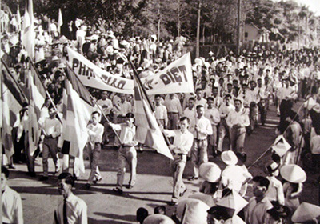

Buddhist Crisis
Not all the action is at the battleground; there are violent acts by the Vietcong government and the Vietcong army. South Vietnam troops enforced a ban on the Buddhist multicolour flag. This incident later resulted in a violent and intensive protest by Buddhists against the government. The South Vietnamese government was Catholic and the Buddhists were not supporters of the Vietcong and were unhappy with the Catholic domination of their country.
In May 1963, the 2527th birthday of Buddha, thousands of Buddhists gathered in Hue to celebrate it, but the governor of Hue was a Catholic and despised the flying of the Buddhist flag. Since the Vietcong government banned the flying of the Buddhist flag, thousands of Buddhists gathered at a radio station to hear the address of the Buddhist leader, but the manager of that radio station cancelled the broadcast. The local governor, Major XI, sent five armoured vehicles to the scene. The commander of the vehicles demanded that the crowd of people disperse, but later told his men to open fire on the crowd. People panicked, resulting in the death of one woman and eight children. Soon after that, the Buddhist people demanded an investigation into the matter, but the governor just placed all the blame on the Vietcong despite all the evidence. The Buddhist people held multiple demonstrations due to the government not taking responsibility for the shooting that took place in Hue.
The burning monk.jpg)
In June 1963, an old Buddhist monk named Quan Duc set himself on fire. This event took place in the busy streets of Saigon. Duc climbed out of a car and he sat down in an open space where the other monks surrounded him. Another monk doused Duc with gasoline and lit him on fire. The monk clasped his hand due to the pain, and soon the fire spread throughout his body, a slow and painful death. With his last dying word, he said to the South Vietnam leaders to show respect for all religions. Demonstrations continued in hue for how the south president Ngi Dinh Diems has refused a proper investigation on the Hue shooting. Ngo Dinh Nhu, brother of Ngi Dinh Diems was furious with the demonstration made by the Buddhists and so he decided to attack the Buddhist temple. Ngi Dinh Diems, who supports his brother’s actions, had decided to pin the blame on the parts of the army. On August 21, 1963, Nhu’s men attacked the main Buddha temple in Saigon, Xa Loi. The Nhu’s men surrounded and attacked the temple, raiding and arresting the people. On that day, 400 people were arrested including an 80-year-old patriarch. Similar incidents took place all around South Vietnam, where Buddhist temples were raided and people were arrested by Nhu’s forces.